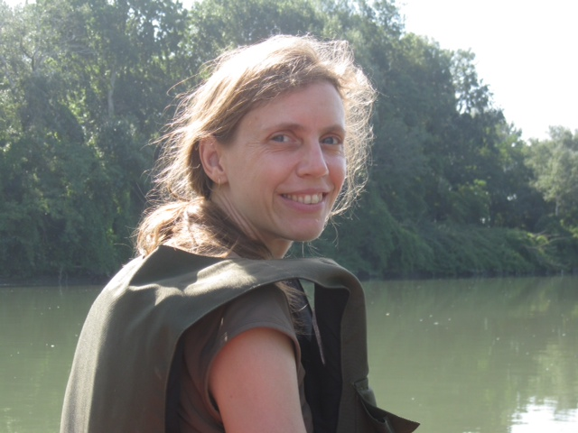

|  |
|
Expertise
Git, Orion, DevOps, Collaborative Lifecycle Management Deployment Automation, Systems and Software Engineering Deployment Automation, Business Process Management, Services Oriented Architecture, Continuous Delivery, Business and Model Driven Development, Globalization
Hobbies
Running, x-country skiing, hikingCranberry Park Campground business operator 1993-current
Hostess for Cranberry Jam
Cabin builder and ongoing maintenance 1992-current
Java Patterns Sudoku game & solver
Flutist in Lyon Street Celtic Band 1998-2001 & annual barndances
Developer of Ruby on Rails sites:
Cranberry Park Campground
Blue Skies Music Festival Volunteering
Experience and Qualifications
- Software Quality Developer, Rational/IBM 2001-current
- Software Designer, Newbridge Networks/Alcatel 1997-2001
- Research Assistant, Parallel Computation Lab, Queen's University, 1996-1997
- M.Sc. (Computing & Information Science), Queen’s University 1997, NSERC recipient
Thesis: “Graph, Group and Algorithmic Properties of Cayley Interconnection Networks” with special attention to the Star Interconnection Network - B.Sc. Honours (Math. & Comp. Sc.), Queen’s University, Class I degree, 1996